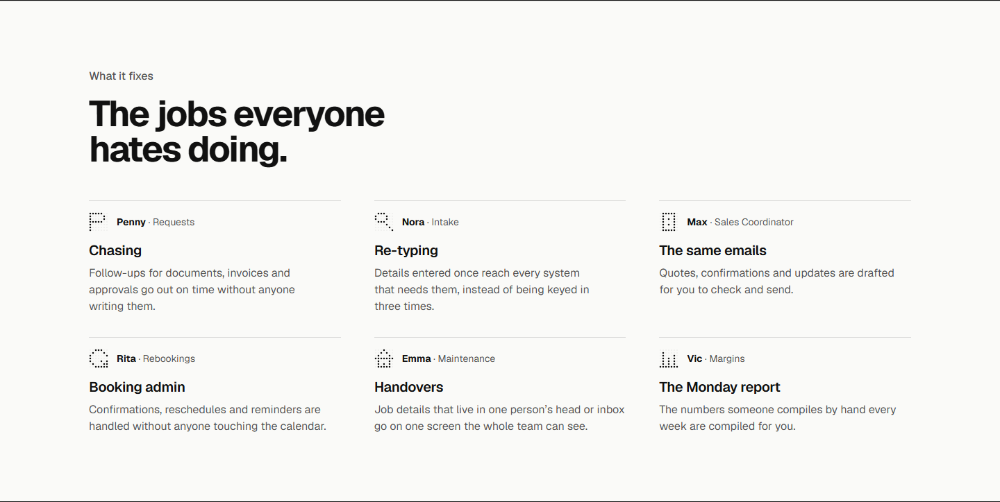
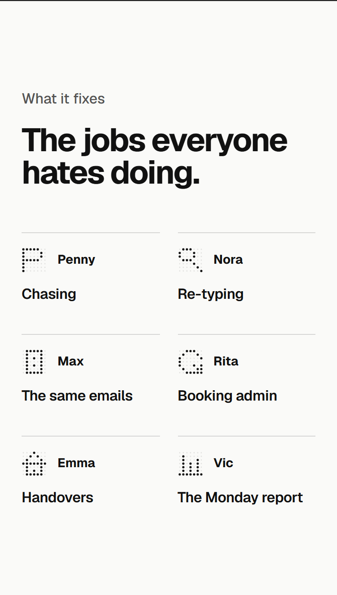
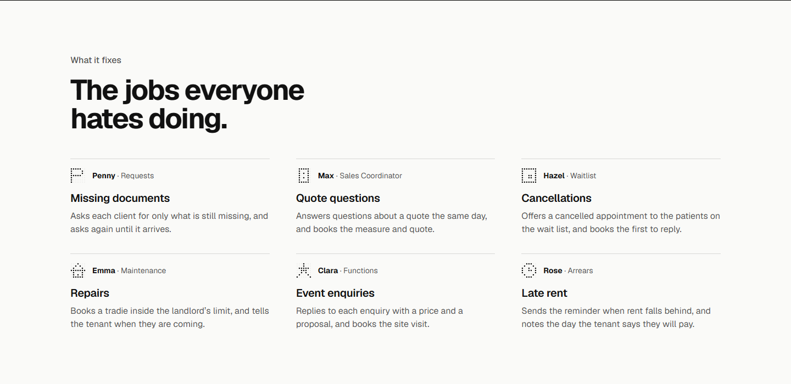
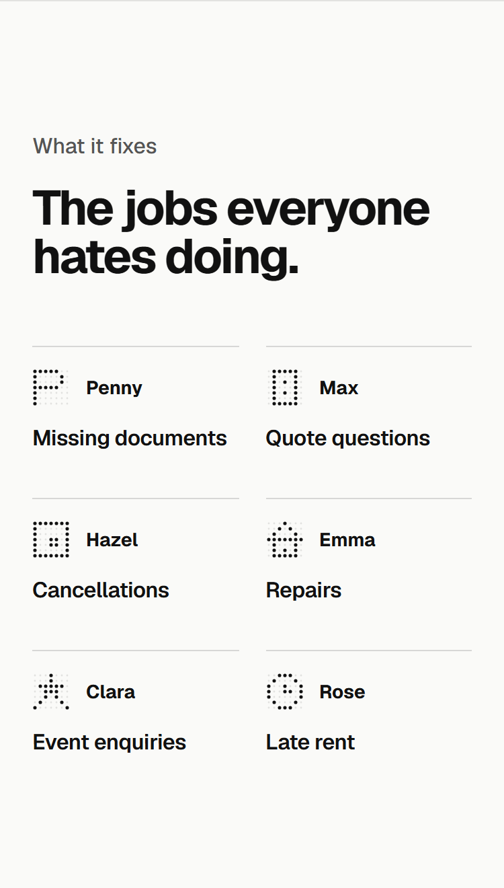
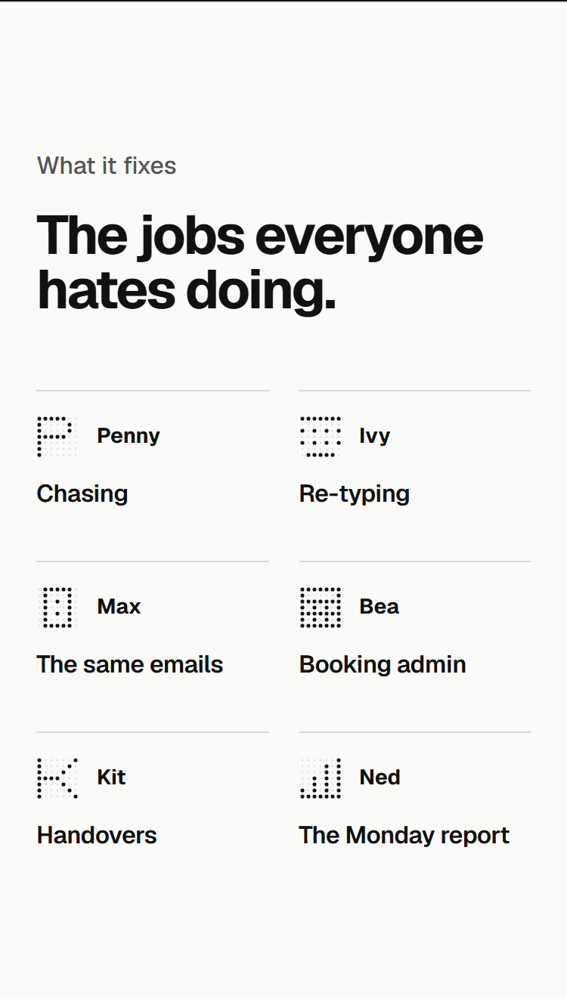
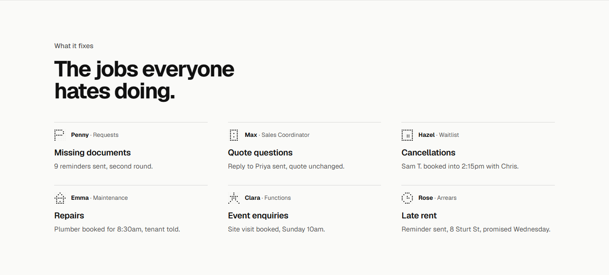

Will: "do all the employees actually match to the text underneath them?" Every option keeps his 4 Nov details (name and job above the title, no note, phones two across) and the heading, his own line. A and C use only employees the site already shows doing that job.
| Employee | Card | Where the site shows it doing this | Fit | In |
|---|---|---|---|---|
| Penny · Requests | Missing documents | Finance screen: "9 reminders sent, 2nd round"; her card reads a client's reply against last year and drafts the request for what is missing | fits | A, B, C |
| Max · Sales Coordinator | Quote questions / The same emails | Trades screen: "Reply to Priya sent, quote unchanged", "Booked Thu 10am measure and quote" | fits | A, B, C |
| Hazel · Waitlist | Cancellations | Health screen: "2:15pm with Chris opened up. Three patients on the wait list want it", then "Sam T. booked into 2:15pm with Chris" | fits | A, C |
| Emma · Maintenance | Repairs | Property screen: "Plumber $380, inside the landlord's $500 limit. Booked 8:30am unless you say no", then "Plumber booked for 8:30am, tenant told" | fits | A, C |
| Clara · Functions | Event enquiries | Hospitality screen: "Tom asked about a 40th for 60 ... $79 a head, proposal attached, visit Sunday 10am?", then "Site visit booked" | fits | A, C |
| Rose · Arrears | Late rent | Property screen: "8 Sturt St, 15 days behind", then "Reminder sent, promised Wednesday" | fits | A, C |
| Kit · Dispatch | Handovers | Trades screen: "Placed it with Sam, 40 min from his 8am"; Kit has no title anywhere, so Dispatch is new | fits, title new | B |
| Ivy · Data Entry, Bea · Bookings, Ned · Reports | Re-typing, Booking admin, The Monday report | New example employees: on the site nowhere, so nothing to contradict and nothing showing them at work | new | B |
Out of 5, a point each, half for partly: Picture, True to that employee's work, Plain to a stranger, the set's grammar (a noun phrase naming the thing that piles up), Will's shape. The highlighted line in each group is the one used.
| Employee | Title | Pic | True | Plain | Gram | Shape | /5 | Note |
|---|---|---|---|---|---|---|---|---|
| Penny · Requests | Missing documents | 1 | 1 | 1 | 1 | 1 | 5 | |
| Penny · Requests | Chasing documents | 1 | 1 | 1 | 0 | 1 | 4 | |
| Penny · Requests | Document chasing | 1 | 1 | 0.5 | 1 | 0.5 | 4.0 | |
| Penny · Requests | Paperwork | 0.5 | 0.5 | 1 | 1 | 0.5 | 3.5 | |
| Max · Sales Coordinator | Quote questions | 1 | 1 | 1 | 1 | 1 | 5 | |
| Max · Sales Coordinator | Quote follow-up | 0.5 | 0.5 | 0.5 | 1 | 0.5 | 3.0 | |
| Max · Sales Coordinator | Customer questions | 0.5 | 1 | 1 | 1 | 0.5 | 4.0 | |
| Max · Sales Coordinator | Answering quotes | 0.5 | 1 | 1 | 0 | 0.5 | 3.0 | |
| Hazel · Waitlist | Cancellations | 1 | 1 | 1 | 1 | 1 | 5 | |
| Hazel · Waitlist | Empty appointments | 1 | 1 | 1 | 1 | 0.5 | 4.5 | |
| Hazel · Waitlist | Last-minute gaps | 1 | 1 | 0.5 | 1 | 0.5 | 4.0 | |
| Hazel · Waitlist | The wait list | 0.5 | 1 | 1 | 1 | 0 | 3.5 | names the tool, not the job |
| Emma · Maintenance | Repairs | 1 | 1 | 1 | 1 | 1 | 5 | |
| Emma · Maintenance | Tenant requests | 0.5 | 1 | 1 | 1 | 0.5 | 4.0 | |
| Emma · Maintenance | Maintenance requests | 1 | 1 | 1 | 1 | 0 | 4 | repeats the line above it |
| Emma · Maintenance | Booking tradies | 1 | 1 | 1 | 0 | 0.5 | 3.5 | |
| Clara · Functions | Event enquiries | 1 | 1 | 1 | 1 | 1 | 5 | |
| Clara · Functions | Party bookings | 1 | 0.5 | 1 | 1 | 1 | 4.5 | |
| Clara · Functions | Function enquiries | 1 | 1 | 1 | 1 | 0 | 4 | repeats the line above it |
| Clara · Functions | Enquiries | 0 | 1 | 1 | 1 | 0.5 | 3.5 | |
| Rose · Arrears | Late rent | 1 | 1 | 1 | 1 | 1 | 5 | |
| Rose · Arrears | Rent reminders | 1 | 1 | 1 | 1 | 0.5 | 4.5 | |
| Rose · Arrears | Chasing rent | 1 | 1 | 1 | 0 | 1 | 4 | |
| Rose · Arrears | Arrears | 0.5 | 1 | 0 | 1 | 0 | 2.5 | a trade word, and repeats the line above it |





